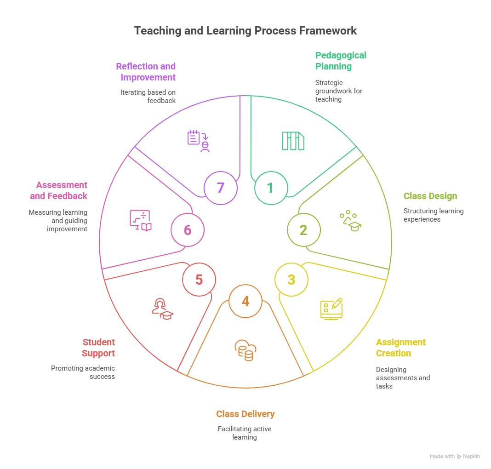

1. Teaching and Learning Framework and Prompt Engineering#
This introductory section lays the groundwork for integrating AI into education by presenting a comprehensive teaching and learning process framework. It also introduces the fundamental concepts of prompt engineering, explaining what it is, why it matters, and its core components. Understanding this practice of crafting effective inputs for AI is crucial for guiding large language models to produce accurate, relevant, and useful outputs. This section also includes basic exercises to help you deconstruct and compare different prompt types.
The “AI Confession Booth”#
What’s the most surprising or creative way you have used AI in education or daily life? Connect words with underline*. Word Cloud: [https://www.menti.com/albnhdfn6ovk] or Join at menti.com with code 11193453
1.1 Teaching and Learning Process Framework#

A. Pedagogical-Didactic Planning#
Strategic and intentional groundwork for teaching
Define course goals and learning outcomes
Identify audience and context
Select pedagogical approaches (e.g., active learning, inquiry-based, project-based)
Choose educational technologies and AI-enhanced tools
Align with institutional and ethical guidelines
Create the course Syllabus
B. Class Design and Development#
Structuring the learning experience for clarity, engagement, and progression
Break down content into modules or units
Design and create each class session (objectives, contents, materials)
Create learning strategies
Select and prepare learning materials
Integrate discussion and reflect elements
Create AI-Powered Class Summary Generator
C. Preparation of Assignments and Exams#
Creating opportunities for practice, application, and evaluation
Design formative and summative assessments aligned with learning objectives
Use rubrics to define performance expectations
Create authentic tasks (e.g., case studies, real-world problems, AI-assisted projects)
Balance low- and high-stakes activities
Ensure accessibility and academic integrity
Use AI to draft, refine, or personalize assignments and quizzes
D. Teaching the Classes (Class Delivery)#
Enacting the instructional plan with flexibility and engagement
Facilitate active, student-centered learning (e.g., discussion, problem-solving)
Use storytelling, examples, demonstrations, and Socratic questioning
Employ tech and AI tools for content delivery (e.g., ChatGPT, simulations, visualizations)
Monitor engagement and comprehension in real time
Adapt pacing and methods responsively
E. Student Support#
Promoting academic success and well-being
Provide office hours and timely responses to inquiries
Offer guidance on assignments and study strategies
Monitor Student Success
Provide AI-curated resources (e.g., study guides, tutoring suggestions)
Encourage peer collaboration and support networks
Introduce AI Tutors
F. Assessment and Feedback#
Measuring learning and guiding improvement
Conduct Assessments Using Existing Assignment Types
Generate Rubric-Based, Constructive Feedback
Use AI-Assisted Self- and Peer-Assessment
Use AI for Feedback, Grading, and Originality Verification
G. Reflection and Improvement#
Closing the loop through critical self-analysis and iteration
Reflect on teaching effectiveness using student feedback, learning data, and peer observations
Identify what worked, what didn’t, and why
Revise materials, strategies, and assessments for future iterations
Stay engaged with research and innovations in pedagogy and educational technology
Share experiences with colleagues to foster a culture of reflective teaching
1.2 Prompt Engineering Basics#
A. Learning Objectives#
Understand the purpose and scope of prompt engineering.
Identify the components that make up an effective prompt.
Identify and apply different types of prompt design patterns.
Compare how prompt structures influence AI outputs.
Practice prompt improvement through iteration.
B. What is Prompt Engineering?#
Prompt engineering is the practice of crafting effective inputs (prompts) for large language models (LLMs) to produce accurate, relevant, and useful outputs.
Unlike traditional programming, where you write rigid code, prompt engineering is about communicating naturally with an AI system — and doing so strategically.
C. Anatomy of a Prompt#
A good prompt typically includes:
Instruction: What you want the model to do.
e.g., “Summarize the text below in bullet points.”
Context (optional): Background information or framing.
e.g., “You are a customer support agent.”
Input Data: The text, question, or file the model will process.
e.g., “Customer review: The product broke in 2 days…”
Output Format (optional): Desired structure or style.
e.g., “Respond in JSON format with sentiment and category.”
D. Why Prompt Engineering Matters#
It boosts model performance without changing the model itself.
It helps tailor responses to specific tasks and audiences.
It allows you to guide the model toward more reliable, interpretable results.
Example Prompt
You are a scientific editor. Summarize the text below into 3 bullet points for a general audience.
Text:
Prompt engineering is the practice of crafting effective inputs (prompts) to guide generative AI models like ChatGPT, Claude, or Gemini toward producing accurate, relevant, and useful outputs. It involves understanding how AI interprets language and strategically structuring prompts to achieve specific goals, whether it is summarizing text, generating code, analyzing data, or creating content. Good prompt engineering can significantly enhance the quality of AI responses, making it a critical skill for maximizing productivity and creativity with AI tools.
Exercise 1: Deconstruct This Prompt
Given the prompt below, identify its components:
You are a legal assistant. Given the client's message, extract the key legal issue and relevant date in bullet points.
Message:
I was evicted without notice on June 3rd even though I paid rent until July...
E. Why Prompt Patterns Matter#
Prompt patterns are reusable structures that help you get consistent, high-quality results from language models. Understanding them empowers you to choose the right style for your goal.
F. Common Prompt Types#
1. Instructional Prompts Directly ask the model to perform a task, e.g.:
"Summarize the following article in three sentences."
2. Role-Based Prompts Assign the model a specific identity or role to guide tone and knowledge.
You are a career coach. Give me advice on how to negotiate a salary raise.
3. Chain-of-Thought Prompts Encourage step-by-step reasoning or breakdown of complex tasks.
What is the square root of 144? Explain the steps before giving the answer.
4. Zero-Shot Prompts Provide only the instruction and input — no examples.
Translate the following sentence into Portuguese: "How are you?"
5. Few-Shot Prompts Include examples of input/output pairs to guide the model.
Translate the following:
English: Good morning → Portuguese: Bom dia
English: Thank you → Portuguese: Obrigado
English: I’m hungry → Portuguese:
G. Prompt Comparison#
Pattern |
Use Case |
Example Role/Task |
|---|---|---|
Instructional |
Clear single-step tasks |
“Summarize this paragraph.” |
Role-Based |
Tone/personality alignment |
“You are a financial advisor…” |
Chain-of-Thought |
Complex reasoning, multi-step problems |
“Explain each step before giving the answer.” |
Zero-Shot |
Fast and generic tasks |
“Translate to Spanish…” |
Few-Shot |
Custom structure or format |
“English → French examples…” |
Exercise 2: Prompt Comparison Activity
Use the following task and try prompting it in three different styles.
Task: Recommend three books for someone interested in artificial intelligence.
H. Why Iteration Matters#
Prompting is often not a one-shot process. Even good prompts may return incomplete, vague, or misleading results. The key is to test, analyze, and refine.
Iteration helps you:
Clarify vague requests
Add or remove unnecessary detail
Adjust tone or output format
Explore different framing approaches
I. The Iterative Prompting Process#
Draft the initial prompt
Write a basic version of your request.Review the output
Is it accurate? Detailed enough? In the right tone or format?Refine the prompt
Add missing instructions, clarify goals, or adjust roles.Test again
Compare outputs, note improvements, and repeat if needed.
Exercise 3: Prompt Iteration and Debugging Examples
Poor Prompt:
Explain climate change.
Improved Prompt (Iteration 1):
Explain climate change in simple terms for a high school student, using 3 key points.
Improved Prompt (Iteration 2):
Explain climate change in simple terms for a high school student. Use 3 bullet points and include one analogy related to daily life.
Exercise 4: Prompt Experiment Classwork
Microsoft Financial Sample Excel Workbook
Spreadsheet download Available at: [https://learn.microsoft.com/en-us/power-bi/create-reports/sample-financial-download]
You support retail sales analysis at Contoso. The VP of Regional Sales needs an assessment to guide monthly discount strategies.
Task: Compare net ‘ Sales’ for this observation to average for all ‘Product’ sold under this ‘Discount Band’, and ‘ Sales’ for this ‘Product’ in this ‘Month’.
| Segment | Country | Product | Discount Band | Sales | Month | Year |
| Government | United States of America | Montana | Medium | 178500.35 | October | 2014 |
Step 1 – Chain-of-Thought (show your work):
1. Compare Averages: Current vs average Sales with this Product and Discount Band, and vs average Sales with this Product and Month.
2. Compare Segment: Calculate and compare this point to performance of this Product in each other Segment in this Country.
3. Compare Country: Calculate and compare this point to all performance in the Country, and performance in all Countries.
4. Compare Product: Calculate and compare this point to all performance of this Product, and performance of all Products.
5. Compare and Discuss: Review this point in comparison to historical, country, and product performance, and infer overall performance.
Step 2 – Analysis:
Write a concise paragraph identifying trends and discussing likely drivers behind any variance.
Step 3 – Prediction:
Based on findings, advise whether Contoso should continue, adjust, or halt this Discount Band.
J. Tips for Troubleshooting and Improving Prompts#
If output is too generic: Add specific instructions or examples.
If output hallucinates: Ask the model to “only use provided information.”
If output misses important parts: Reframe the prompt with clearer structure.
If output is inconsistent: Use role and format specifications.
Hallucination is when a model confidently outputs incorrect or invented information.
K. Assessing Prompt Quality#
Five criteria to judge the effectiveness of a prompt-output pair:
Criterion |
Description |
|---|---|
Relevance |
Is the response aligned with the prompt’s intent? |
Completeness |
Does the answer cover all requested aspects? |
Clarity |
Is the response easy to understand and well-structured? |
Factual Accuracy |
Are the claims and data points correct and verifiable? |
Format |
Does the output follow the requested format or style? |
L. Techniques to Reduce or Identify Hallucinations#
Ask the model to cite its sources or say “Only use the provided text/file.”
Clarify that the model should say “I don’t know” if unsure.
Specify that the answer should be based only on the uploaded file or context.
1.3 Ethical Considerations#
Responsible use: data privacy, bias, hallucinations, transparency
Examples of misuse and how to avoid them
When not to use AI or when to rely on human judgment
1.4 Wrap-Up Reflection#
What did you learn about the teaching and learning framework that surprised you?
Which AI tasks are you most comfortable with?
What task in your work would you most like to streamline with AI?
What did you learn about prompt engineering?